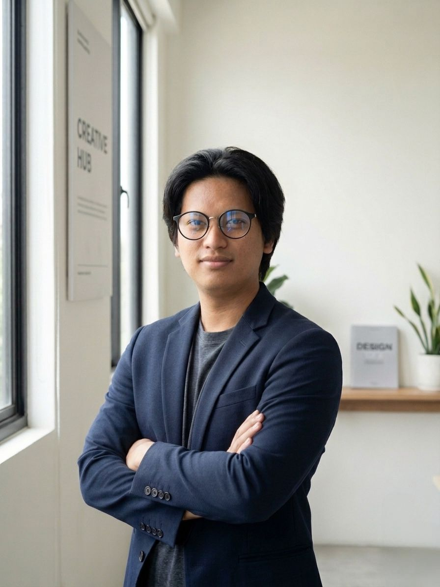
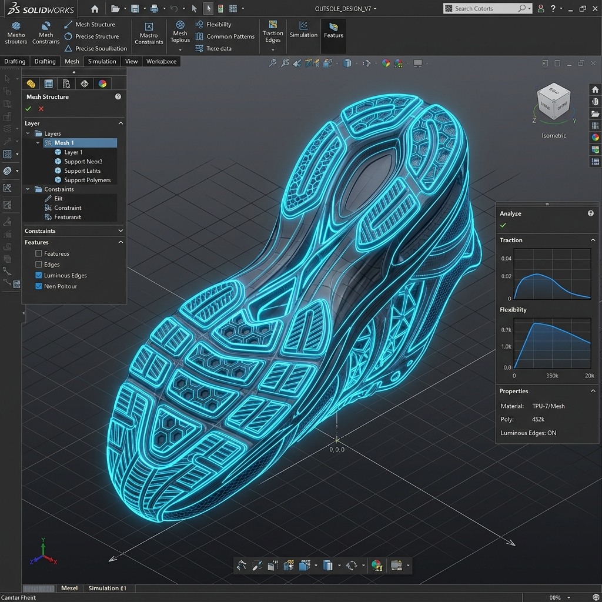
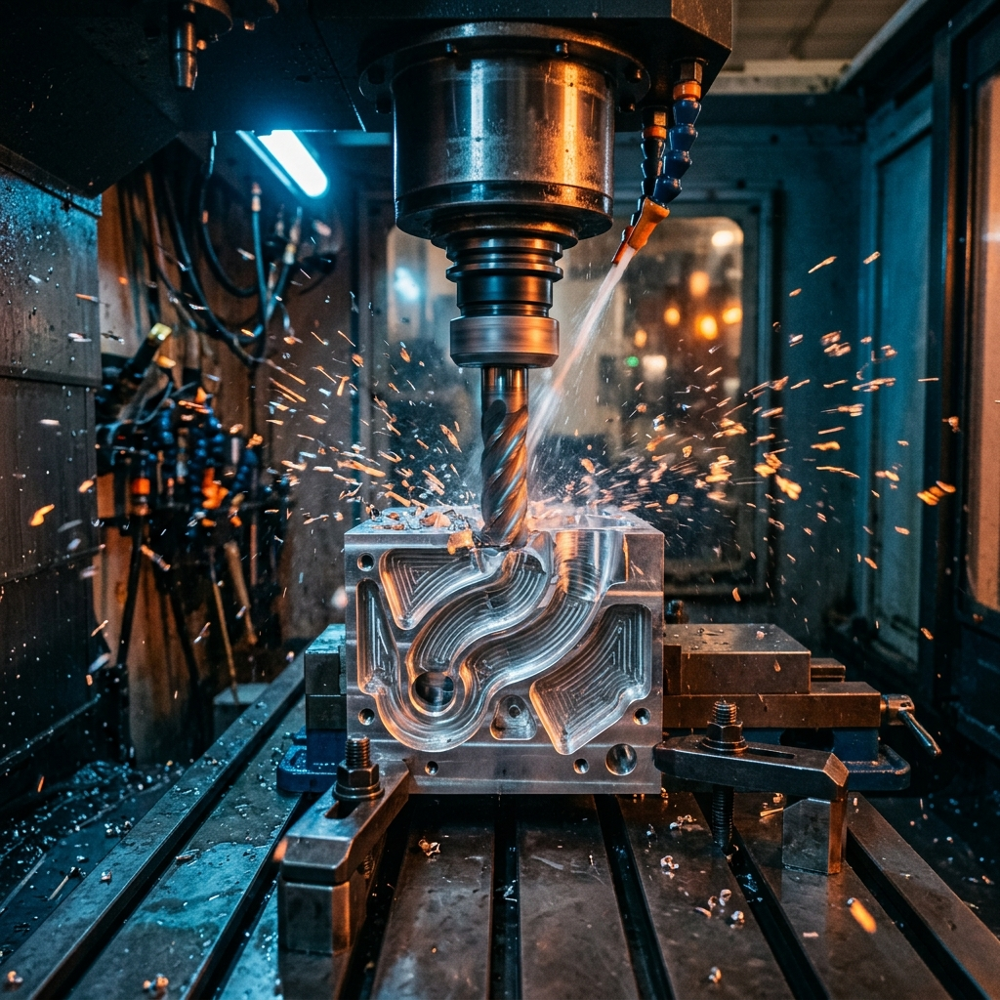
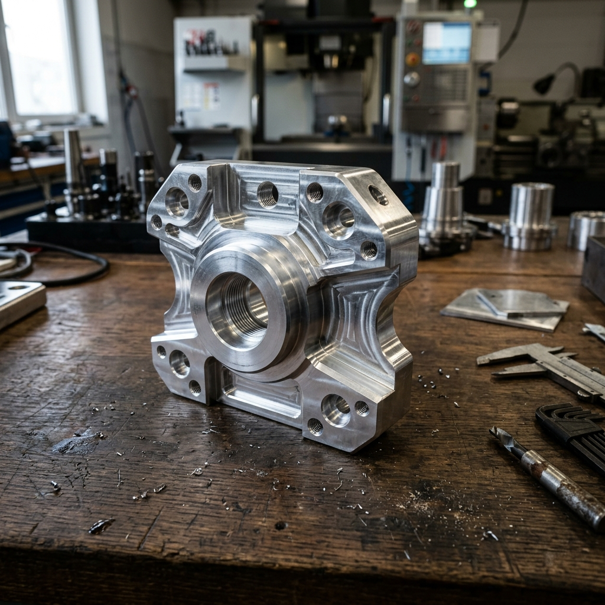

Hello, I'm
Specializing in precision 3D modeling, manufacturing workflows, and automated production systems. Merging computer science with mechanical engineering.

Saya merupakan lulusan Sarjana Komputer dari Universitas Sains dan Komputer (2023) dengan latar belakang Teknik Pemesinan dari SMK. Saya memiliki kompetensi unggul di bidang CAD/CAM, pemodelan 3D, dan proses manufaktur tooling.
Berpengalaman dalam pembuatan desain teknik menggunakan software CAD (Rhinoceros), inspeksi outsole, serta penyusunan program CAM untuk mesin 3D printing. Saya memiliki pemahaman mendalam tentang toleransi, kualitas produksi, dan alur proses manufaktur.
Terbiasa bekerja dengan presisi, cepat belajar, dan siap berkontribusi dalam pengembangan sistem produksi berbasis teknologi CAD/CAM dan otomasi industri.

High-precision 3D modeling for industrial shoe manufacturing, ensuring perfect contouring and ergonomic tolerances.

Advanced G-Code generation and dynamic toolpath optimization for efficient metal milling and reduced cycle time.

Final machined product featuring exact chamfers, smooth surface finishes, and strict dimension adherence.
Memperoleh dasar yang kuat dalam pemrograman (Java, Python, C++), struktur data, algoritma, rekayasa perangkat lunak, dan jaringan komputer. Mengembangkan kecintaan terhadap inovasi teknologi.
Pemahaman komprehensif tentang sistem mekanik, operasi mesin CNC, dan pemeliharaan. Pemenang kompetisi CADD (Computer-Aided Design and Drafting). Menguasai interpretasi gambar teknis dan pengukuran presisi.
Interested in collaborating or need a skilled CAD/CAM Engineer? Let's discuss how I can contribute to your next project.